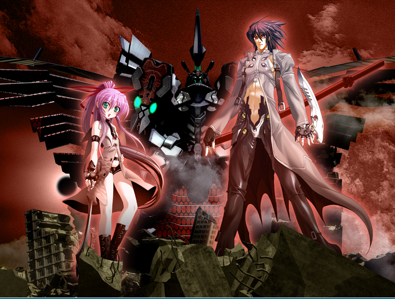

《死靈之書》
“AlAzif”，也就是《死靈之書》(Necronomicon)。最高位的魔導書，擁有各種不可思議的法術。召喚形態是擁有白玉般的肌膚，櫻色的長發，翡翠色的眼瞳的美麗少女，以16歲的相貌出現。 死靈之書的相關法術派系為靈性。
魔術甲胄：
B級：
形象為黑色的緊身皮裝，施法時全身的咒文都會發亮。術者的一只眼睛變成紅色，一只眼睛變成藍色，頭發變白，獲得持久的識破隱形能力（視為獲得【偵測等級】為C，魔幻本質的偵測能力），并且能看到任何鬼魂（但鬼魂也會同樣覺察到術者的窺視）。力量+2，敏捷+2。甲胄本身視為擁有4/4防御，擁有『防彈』和『防能量武器』特性的盔甲，但完全不影響活動。每維持10輪需要5點魔力，魔導書可以用自己的魔力來支付。
A級：
在B級魔術甲胄的基礎上，背后長出漆黑的魔術之翼，可以用每點智力10米/輪的速度進行飛行，機動性為完美。力量，敏捷各自再+4，防御成為8/8。在進行以術者為目標的法術的對抗時，獲得+4有利的判定。每維持10輪需要7點魔力，可以由魔導書本身支出。
AL.AZIF的本體：
外貌：擁有白玉般的肌膚，櫻色的長發，翡翠色的眼瞳的美麗少女，以16歲的相貌出現。性格野蠻驕傲，但其實內心是堅強而溫柔的。
屬性：力量4，敏捷6，耐力5，智力11，感知6，決心6，風度8，操控5，沉著4
技能：視為所有技能全部為2。特殊：學識8（魔法5）
鬼械神：艾恩（Aion)
它是有著鋼鐵般的意志，以冷酷的劍刃收割生命的死神(Deus ex Mortis)。是連不可理喻的事物也能斬滅的超級不可理喻。是能將超越生命的生命打倒、而自己本身就是超出生命范疇之外的，無機的破壞者。
被冠以“永恒”之名的，機械構筑的神祗(Deus ex Machina)。
特殊裝備如下：
對靈狙擊炮(Anti Spiritual Rifle)：與艾恩同高的巨大武裝，必要時，可以消耗1個移動動作召喚它，將其由飛舞的魔法文字，在艾恩的手上凝結成閃耀金屬光輝的銀色巨炮，運作時，它的咒術引擎會將成千上萬的魔法文字轉化成有意義的言靈，在炮身周圍包裹上以肉眼無法看清的速度旋轉的無數魔法陣，將能量發射出去。開炮的效果類同于死靈之書的法術“召喚克圖格亞”，但視為射程單位2000，寬度30米的光束攻擊，每超出一個射程單位，傷害減少2點，跟其他遠程武器一樣，極限射程為8個射程單位。你無法將超魔技巧運用其上。
飛行裝置：以法術構造的金屬之翼，可以讓艾恩以陸地速度的4倍速度飛行，機動性為靈活。

特有法術：
D級：提阿馬特之叱喝（Excorcism of ANU），巴爾塞偃月刀，伊塔庫亞之觸碰
C級：火凈詛咒（The Binding of the Evil Sorcerers）， 阿特拉克·納克亞(Atlach-Nacha)
B級：尼托克里斯之鏡（The mirror of Nitocris）
A級：召喚克圖格亞（Cthugha），召喚伊塔庫亞（Ithaqua）
S級：約格.索托斯之鑰（Yog-Sothoth）
提阿馬特之叱喝（Excorcism of ANU）
類別：靈性
等級：D
花費：1點
成分：言語，姿勢，書本
動作：標準
射程：個人
目標：自身
持續：1分鐘/成功數
對抗：無
以安努的力量叱喝邪惡之力。對黑暗生物獲得每2威力值3點的偏斜防御（力場性質），并在對抗影響心靈的魅惑或脅迫效果時，在判定上獲得等量的表現加值。同時各種召喚生物如果要攻擊術者，必須進行一個意志檢定，對抗你的施法檢定，如果失敗則無法攻擊，這是一個如同法術等級、影響心靈的效果。
增幅：每額外支付1點魔力，該法術帶來的防御或對抗加值增加1點。
研發：法術升階
巴爾塞偃月刀
類別：物質
等級：D
花費：1點
成分：言語，姿勢
動作：標準
射程：至近
效果：一把魔法彎刀
持續：1分鐘/成功數
對抗：無
制造出一把純由法術構成，極為銳利的彎刀，它視為魔法武器，在彎刀的基礎上其武器傷害獲得等同威力值的增強加值，可以作為投擲武器對遠程目標進行攻擊，基礎射程為10米，但改為以智力代替力量來計算投擲攻擊的射程上限，射程范圍內無視射程減值和至多4點對方的掩蔽加值（但是無法攻擊全掩蔽目標），攻擊之后會自行回到你的手上。你可以創造多把偃月刀，但最多只能在兩只手上各保留一把，并且在投擲中控制它們，如果你創造了第三把偃月刀，那么第一把刀就會自動變成發亮的魔法文字，消散在空中。
另外，這種彎刀視為魔杖，能夠以武器傷害作為法術強度，可以做為咒文的媒介傳遞接觸性法術，也可以施展必須使用魔杖的法術。
增幅：每額外支付2點魔力，彎刀的武器傷害額外增加1點。
研發：法術升階
法術等級達到C級時，你可以用智力代替敏捷來進行投擲偃月刀的判定。
法術等級達到A級時，你可以用一個全回合動作丟出兩把彎刀，但會由于分心而分別承受-2DP的懲罰。
伊塔庫亞之觸碰
類別：靈性
等級：D
花費：1點
成分：言語，姿勢
動作：標準
射程：接觸
目標：接觸的生物
持續：1輪/成功數或直到能量散發
對抗：無
呼喚伊塔庫亞的部分力量，讓你的手掌冒出絲絲冷氣，碰觸之處皆會化為寒冰。你以施法檢定進行近戰接觸攻擊，如果成功命中對方，那么能量立即散發，造成2+威力值的凍寒傷害。同時，森冷的冰霜會從被碰觸之處開始向對方身上蔓延，受術者的敏捷相關檢定獲得威力值的懲罰，速度減少5倍威力值，這些是凍寒減值，持續1輪/成功數。對方可以消耗若干點能量，用一個迅捷動作驅散每能量1DP和5點速度的減值（炎系能量只需要一半），但寒冷傷害無法如此被抵消。
你可對同一個目標多次使用這個法術進行攻擊并造成凍寒傷害，但效果不會因此疊加，持續時間則只會計算最長的一次。
這個法術的能量也可以在一輪內凍結不超過10升的水，它們會按照自然規律，從你碰觸的位置為圓心往外凍結，你無法控制方向和形狀。
增幅：每額外支付3點魔力，該法術造成的傷害提高1點。
增幅：每額外支付2點魔力，該法術造成的罰值增加1點，并額外降低5米速度。
研發：法術升階
火凈詛咒（The Binding of the Evil Sorcerers）
類別：靈性
等級：C
花費：3點
成分：言語，姿勢，書本
動作：1分鐘
射程：接觸
目標：接觸的生物
持續：立即
對抗：見描述
當你被古老的詛咒困擾時，可以打開死靈之書，念出記載于其上的禱文，同時呼喚三位蘇美爾的神祗： 安努（ANU）, 恩利勒（ENLIL）, 和恩基（ENKI）的力量，借助神力的火焰，驅逐詛咒。這是一個強大而危險的法術。你的身上顯現出沒有熱度的熊熊火光，你可以用這種火焰的效果驅逐自己身上的詛咒，或者以它凈化它人。詛咒會化為黑色的游蕩能量，從目標的身體上浮現出來，隨后被火焰焚凈，化為虛無。你在法術成功施展的瞬間，可以立即清除目標身上所有法術等級或以下的詛咒，但如果該法術超過法術等級，那么你需要進行一個施法檢定，并在此檢定中額外獲得威力值的附加成功數作為增強加值，對抗施咒者的施展檢定（或意志檢定，若無施展檢定）。如果成功，則詛咒被立即驅逐，如果失敗，你通常可以繼續嘗試。
要在一輪內施展這個法術，你在檢定中承受-5DP減值，且在進行判定時，對方施法者等級，以及施法的關鍵屬性和施法所用技能，每個比你的對應項高1，你的DP就要承受-1懲罰。如果最終失敗，那么詛咒無豁免地轉移到你的身上，且無論前提條件為何，立即生效。如果失敗5或更多，那么無法控制的神力會侵蝕你的思想，神火在你的體內焚燒，你失去一點感知和一點耐力，只有在主神空間才能恢復，且不能再次為這個目標重試這道法術。
研發：法術升階
召喚阿特拉克·納克亞(Atlach-Nacha)
類別：靈性
等級：B
花費：5點
成分：言語，姿勢
射程：5米/智力
動作：標準
效果：半徑20米擴散范圍內的蜘蛛網
持續：1分鐘/成功數
對抗：反射或力量+運動；見描述
召喚阿特拉克·納克亞（舊日支配者中的蜘蛛神）的部分力量，在現世投影出以魔力構成的蛛網。這些蛛絲必須固定在兩個或多個完全相對的固定點上，否則就會因不能完全張開而消失。在蛛網中的生物會被粘絲糾纏住。你本人不會受此影響。
施展這道法術時，在目標范圍內的對手必須通過反射檢定（這視為一個范圍攻擊）對抗你的施法檢定以避開蛛網。如果對抗成功，那么他就能夠行動；如果對方對抗失敗，則被蛛網黏住，如同被擒抱住一樣，以施法檢定作為擒抱dc，每回合開始或主動進行嘗試時，這些角色需要進行擒抱對抗判定以擺脫擒抱，他們的擒抱對抗判定結果若超過dc，則可以成功掙脫蛛網。
對于被蛛網纏住的目標來說，你之后使用的這道法術，若是他們再次對抗失敗，就會陷入定身狀態。
蛛網可以被視作掩蔽物，并為人物提供部分或完全掩蔽。每0.1米的魔力蛛絲，視為結構5，硬度3的細線，但額外具有火易傷5。
研發：法術升階
尼托克里斯之鏡（The mirror of Nitocris）
類別：靈性
等級：B
花費：5點
成分：言語，姿勢
射程：20米/智力
動作：標準或反射；見描述
范圍：10米半徑球形擴散區域
持續：1輪/成功數
對抗：見描述
不可思議的法術，使虛界和現實的界限變得模糊，從而使幻象具現化。你進行施法判定，幻象的真實程度受到成功數影響。你必須維持專注才能投射幻象。如果支付2點意志，則你可以用反射動作施展這個法術。如果對方通過了判定，這個法術就對其完全無效。
成功數 效果
1 出現容易識破的幻象，只要發生互動，就會自動被識破。
1+ 幻象在視覺上已經相當清晰，但依然沒有實體。必須發生互動，才能通過對抗來識別，只要對方通過判定，就會發現這是幻術。如果制造的是可動物體的幻象，那么最多只能制造1個
11+ 幻象具有一定的真實感，會呈現出溫度，觸感，電磁場等反應，可以發出聲音。如果制造的是可動物體的幻象，那么最多可以制造2個。
21+ 幻象更加接近真實的效果，如果是可動物體，則屬性最高可等同于你的成功數一半，但沒有其他能力。不能超過你本人的智力和操控（取低者）擁有你所有技能的50%（向下取整）如果制造的是可動物體的幻象，那么最多可以制造5個。
31+ 幻象極度接近真實。擁有所有的特性，如果是可動物體，則屬性最高可等同于你的成功數，不能超過你本人的智力和操控（取高者）。即使被看穿也會保留一半的能力，擁有你所有的技能。如果制造的是可動物體的幻象，那么數量最多等于你的操控值。
召喚克圖格亞（Cthugha）
類別：靈性
等級：A
花費：7點
成分：言語，姿勢，書本
動作：標準
射程：20米/智力
范圍：橫截面為20米直徑圓形的20米/智力線狀
持續：立即
對抗：反射
召喚舊日支配者克圖格亞的力量，將其以純粹的能量方式投射在物質界，神力的碎片化作爆燃的凈火，將周圍的一切徹底燒盡。將你的智力值加上你的學識等級及學識上的附加成功數，以此結果作為范圍攻擊的傷害。由于這是極為純凈的能量，而不是真正的火焰，所以火焰抗力和免疫火焰的能力對它完全不起作用。閃避者會承受等于施法檢定的懲罰。法術產生的高溫會點燃物體，但它本身并不會引起持續的燃燒。該法術在水和真空中都可以正常起效，靈體和精神體，以及能量體也會正常受到傷害。
召喚伊塔庫亞（Ithaqua）
類別：靈性
等級：A
花費：7點
成分：言語，姿勢，書本
動作：標準
射程：20米/智力
范圍：半徑30米球形擴散區域
持續：立即
對抗：反射
將舊日支配者伊塔庫亞的力量以純粹的能量方式投射在物質界，神力的能量化為狂風和寒冰，將四周化為冰雪地獄。將你的智力值加上你的學識等級及學識上的附加成功數，以此結果作為范圍攻擊的傷害。這種傷害中，一半是烈風造成的沖擊傷害，一半是寒冷。由于寒冷能量是純粹的神力造成，所以免疫寒冷或類似的能力無法對其起作用。該法術造成的每1點傷害都將造成1點凍結點數，這一凍結點數額外造成5倍的速度減值。此外，反射檢定的每個失敗數都會將受術者向空中吹飛10米，并如常受到墜落傷害。靈體，精神體和能量體不會受到烈風的傷害，但會受到正常的寒冷傷害。
約格.索托斯之鑰（Yog-Sothoth）
類別：靈性
等級：S
花費：9點
成分：言語，姿勢，書本
動作：見描述
射程、目標或范圍：見描述
持續：見描述
對抗：無
你召喚約格.索托斯的力量，穿行于無窮無盡的時空裂縫。即使只能利用約格.索托斯的極小一部分力量，這依然是個極為強大而危險的法術。每個場景，你只能使用這道法術的每個用法一次，若超出此限度，門之鑰的力量將跨越時間與空間，對你或整個世界產生超越常理、不可預料的后果。
這個法術有幾種用法：
一.短距傳送：這是相對安全的使用方式。你可以用一個移動動作，往任意方向傳送最多智力X200米，并且攜帶不超過100公斤的物品。如果你指定的位置有物體，那么你會出現在你跟目標之間沒有物體遮擋，且離目標最近的安全位置。
二.長距離傳送：這種做法耗時較長，也比較危險。你可以在吟唱這個法術的同時，花費十分鐘繪制一個法陣，并且進行一次施法判定，將對目標地點的印象，或者具體的魔法空間坐標繪制在法陣上，然后將自己和最多5個體型為6或以下的自愿生物傳送出去。如果成功數在10個或以下，你會直接迷失在時空的裂縫之中，ST隨機決定你的情況（一般都比較糟糕）；在10到20個成功數之間，會傳送到目標附近一千米之內的隨機地點。成功數在20個以上時，可準確無誤地傳送到目標地點。
難度調整表：
·對目標非常熟悉：+10DP
·有過一定的研究：+5DP
·看過圖片或者詳細的地圖：+0DP
·聽過一些描述，大致知道樣子：-5DP
·完全不熟悉，只聽過傳聞：-10DP
三.正向時間跳躍：即使借助了這個強大的法術，以人類的身體和意識，也無法自由在充滿無限可能性的時間之河里隨意移動。但你依然可以小幅度地在自己身上拉扯時間線。你可以用一個反射動作施展這個法術，讓自己在時間上往后移動一小段，你最多可以跳躍10輪。你會在原地消失這些輪數，在之后你應該行動的回合重新出現，這視為你跳走的同一個回合，所以如果你之前已經做過標準動作或者移動動作，那么你這回合會失去這些動作。
四.逆向時間跳躍：在第一輪以一個標準動作啟動這個法術，這會消耗額外的5點魔力和2點意志。然后如果你在接下去的連續4輪里面，每輪都以一個自由動作消耗3點魔力以維持這個法術，那么在第四輪結束的時候，你可以用一個標準動作，讓時間回歸4輪，回到第一輪你剛剛開始集中精神時光回歸的時刻。在第二次時間流經過里面，因為已經知道了將發生什么事情，所以你可以決定采用完全不同的策略和動作（雖然如果在一開始經過時間時采用不同動作，原來的時間流會有所改變）。即使時間倒回，對你而言這4輪依然是存在過的，所以傷勢和能量的消耗等都不會恢復。
五.時間暫停：通過時間軸的調整，使得你可以在短時間內跳出時間流。使用標準動作施展這道法術，你獲得2輪主觀時間可以自由行動，普通或是魔法火焰、寒冷、毒氣等依然會傷害你。由于你事實上已經不在這個世界的時間之內，所以法術作用期間，其他生物不會因你的攻擊或法術而受傷，你也不能以那些生物為物理攻擊或法術的目標。區域法術持續時間若比該法術剩下的時間長，則可在它結束后繼續生效。若物品被其他生物所持有、攜帶或穿著，則你不能移動或傷害它們，但你可以影響無主物品。